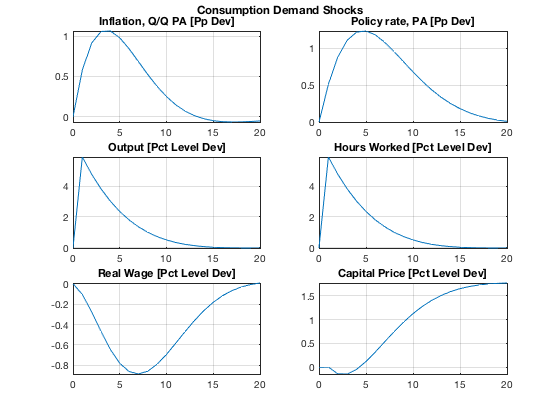
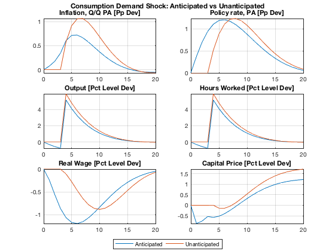
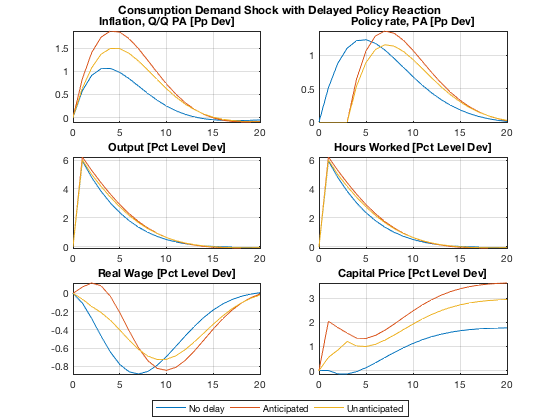
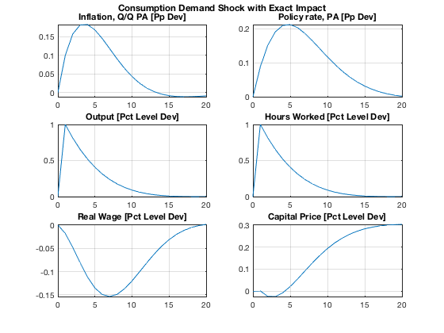
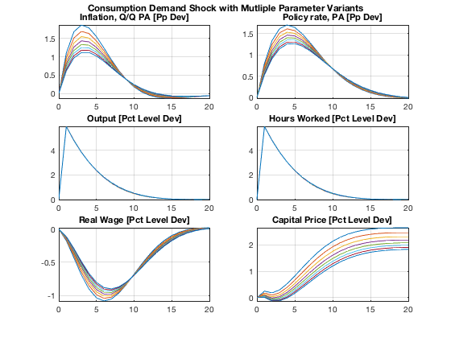

More Complex Simulation Experiments
Simulate the differences between anticipated and unanticipated future shocks, run experiments with temporarily exogenised variables, and show how easy it is to examine simulations with mutliple different parameterisations.
Contents
- Clear Workspace
- Load Solved Model Object
- Define Dates and Ranges
- Simple Consumption Demand Shock
- Anticipated vs Unanticipated Consumption Demand Shock
- Simulate Consumption Demand Shock with Delayed Policy Reaction
- Simulate Consumption Demand Shock with Desired Impact
- Simulate Consumption Demand Shocks with Multiple Parameterisations
- Show Variables and Objects Created in This File
Clear Workspace
Clear workspace, close all graphics figures, clear command window, and check the IRIS version.
clear close all clc irisrequired 20180131
Load Solved Model Object
Load the solved model object built in read_model. Run read_model at least once before running this m-file.
load mat/read_model.mat m
Define Dates and Ranges
startDate = 1; endDate = 40; plotRng = startDate-1 : startDate+19;
Simple Consumption Demand Shock
d = zerodb(m, startDate-3:startDate); d.Ey(startDate) = 0.07; s = simulate(m, d, 1:40, 'Deviation=', true, 'AppendPresample=', true); plotList = { ... ' "Inflation, Q/Q PA [Pp Dev]" dP^4 ', ... ' "Policy rate, PA [Pp Dev]" R^4 ', ... ' "Output [Pct Level Dev]" Y ', ... ' "Hours Worked [Pct Level Dev]" N ', ... ' "Real Wage [Pct Level Dev]" W/P ', ... ' "Capital Price [Pct Level Dev]" Pk', ... }; dbplot(s, plotRng, plotList, 'Tight=', true, 'Transform=', @(x) 100*(x-1)); grfun.ftitle('Consumption Demand Shocks');
Anticipated vs Unanticipated Consumption Demand Shock
Simulate a future (3 quarters ahead) aggregate demand shock twice: as anticipated and unanticipated.
d = zerodb(m, startDate-3:startDate); d.Ey(startDate+3) = 0.07; s1 = simulate(m, d, startDate:endDate, 'anticipate=', true, ... 'Deviation=', true, 'AppendPresample=', true); s2 = simulate(m, d, startDate:endDate, 'anticipate=', false, ... 'Deviation=', true, 'AppendPresample=', true); dbplot(s1 & s2, plotRng, plotList, ... 'Tight=', true, 'Transform=', @(x) 100*(x-1)); grfun.ftitle('Consumption Demand Shock: Anticipated vs Unanticipated'); grfun.bottomlegend('Anticipated', 'Unanticipated');
Simulate Consumption Demand Shock with Delayed Policy Reaction
Simulate a consumption shock and, at the same time, delay the policy reaction (by exogenising the policy rate to its pre-shock level for 3 periods). This can be done in an anticipated mode and unanticipated mode.
- Simulate consumption shocks with immediate policy reaction.
- Simulate the same shock with delayed policy reaction that is announced and anticipated from the beginning.
- Simulate the same shock with delayed policy reaction that takes everyone by surprise every quarter.
nPer = 3; d = zerodb(m, startDate-3:startDate); d.Ey(startDate) = 0.07; sc = plan(m, startDate:endDate); sc = exogenize(sc, 'R', startDate:startDate+nPer-1); sc = endogenize(sc, 'Er', startDate:startDate+nPer-1); d.R(startDate:startDate+nPer-1) = 1; s1 = simulate(m, d, startDate:endDate, ... 'Deviation=', true, 'AppendPresample=', true); s2 = simulate(m, d, startDate:endDate, 'Plan=', sc, ... 'Deviation=', true, 'AppendPresample=', true); s2 = dbextend(d,s2); s3 = simulate(m,d,startDate:endDate, 'Plan=', sc, ... 'Deviation=',true, 'Anticipate=', false, 'AppendPresample=', true); dbplot(s1 & s2 & s3, plotRng, plotList, ... 'Tight=', true, 'Transform=', @(x) 100*(x-1)); grfun.ftitle('Consumption Demand Shock with Delayed Policy Reaction'); grfun.bottomlegend('No delay', 'Anticipated', 'Unanticipated');
Simulate Consumption Demand Shock with Desired Impact
Find the size of a consumption demand shock such that it leads to exactly a 1 pct increase in consumption in the first period. Because consumption (C) is a log-linearised variable, specify the 1 pct deviation from its steady state as 1.01.
d = zerodb(m, startDate-3:startDate); d.Y(startDate) = 1.01; sc = plan(m, startDate:endDate); sc = exogenise(sc, 'Y', startDate); sc = endogenise(sc, 'Ey', startDate); s = simulate(m, d, startDate:endDate, 'Plan=', sc, ... 'Deviation=', true, 'AppendPresample=', true); disp(s.Ey{1:10}); dbplot(s, plotRng, plotList, 'Tight=', true, 'Transform=', @(x) 100*(x-1)); grfun.ftitle('Consumption Demand Shock with Exact Impact');
Series object: 10-by-1 1: 0.012103 2: 0 3: 0 4: 0 5: 0 6: 0 7: 0 8: 0 9: 0 10: 0 'Consumption Demand Shock' user data: empty
Simulate Consumption Demand Shocks with Multiple Parameterisations
Within the same model object, expand the number of parameter variants, and assign different sets of values to some (or all) of the parameters (here, only the values for the parameter xip vary, i.e. the price adjustment costs). Solve and simulate all parameter variants at once. Almost all IRIS model functions support multiple parametert variants.
m(1:8) = m; m.xip = [140, 160, 180, 200, 220, 240, 260, 280]; m = solve(m); disp(m); d = zerodb(m, startDate-3:startDate); d.Ey(1, :) = 0.07; s = simulate(m, d, startDate:endDate, ... 'Deviation=', true, 'AppendPresample=', true); dbplot(s, plotRng, plotList, 'Tight=', true, 'Transform=', @(x) 100*(x-1)); grfun.ftitle('Consumption Demand Shock with Mutliple Parameter Variants');
nonlinear model object: [8 parameter variant(s)] number of equations: [4 16 4 0 0] solution(s) available: [8 parameter variant(s)] comment: 'Simple SPBC Model File' user data: empty export file(s): [0]
Show Variables and Objects Created in This File
whos
Name Size Bytes Class Attributes ans 1x1 120 cell d 1x1 65376 struct endDate 1x1 8 double m 1x8 182429 model nPer 1x1 8 double plotList 1x6 1066 cell plotRng 1x21 168 double s 1x1 128096 struct s1 1x1 25896 struct s2 1x1 25896 struct s3 1x1 25896 struct sc 1x1 12352 plan startDate 1x1 8 double